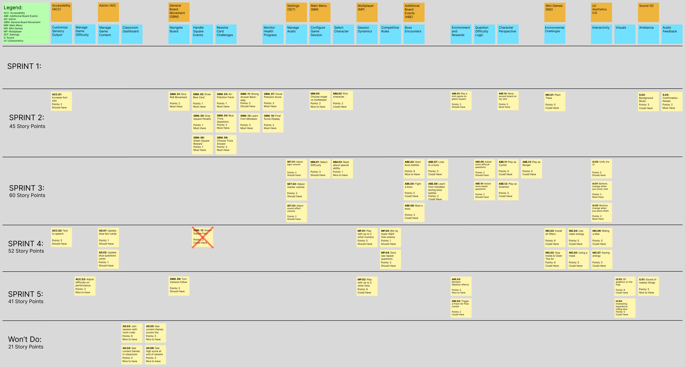

Project Management
Story Map

Project Plan
Sprint 1 (Feb 1)
| Task | Assigned to | Due Date |
|---|---|---|
| Team Canvas | Everyone | Jan 28 |
| Belbin Roles | Everyone | Jan 28 |
| Project Glossary | Vikasini | Jan 28 |
| Sequence Diagram | Ben | Jan 28 |
| Technical Resources | Ben | Jan 28 |
| Detailed List of Technologies | Ben | Jan 28 |
| User Stories | Maansi | Jan 29 |
| US Acceptance Tests | Sridhar | Jan 29 |
| UML Class Diagrams | Ipsa | Jan 29 |
| Create & Fill MkDocs | Sridhar | Jan 28 |
| Story Map | Everyone | Jan 30 |
| High-Level Software Design | Eric | Jan 30 |
| Update Documentation | Sridhar | Jan 30 |
| Low-Fidelity User Interface | Pouyan | Jan 31 |
| Make issues in Github Board | Vikasini | Jan 31 |
| Finish Acceptance Tests | Ipsa | Jan 31 |
| Similar Products | Maansi | Feb 1 |
| Open Source Projects | Eric | Feb 1 |
| Project Overview | Vikasini | Feb 1 |
| Final Checks & GitHub Release | Sridhar | Feb 1 |
Sprint 2 (Feb 15)
Estimated Sprint Velocity - 45
| Task | Assigned to | Due Date |
|---|---|---|
| Unity Setup | Ben | Feb 2 |
| Convert USs to tasks | Everyone | Feb 4 |
| Assign squares colors with callbacks | Ben | Feb 5 |
| Move player characters | Ben | Feb 5 |
| Create blue cards | Ben | Feb 5 |
| Dice Rolling | Ben | Feb 7 |
| Draw blue cards | Ben | Feb 8 |
| Show blue question cards | Ben | Feb 9 |
| Show blue fact cards | Ben | Feb 9 |
| GBM.01 Acceptance Tests | Ben | Feb 10 |
| GBM.02 Acceptance Tests | Ben | Feb 11 |
| GBM.04 Acceptance Tests | Ben | Feb 12 |
| GBM.03 Acceptance Tests | Ben | Feb 14 |
| Fix Board Layout | Sridhar | Feb 9 |
| Create Score Container | Sridhar | Feb 10 |
| Make Player AQHI Logic | Sridhar | Feb 10 |
| Progress Bar Logic | Sridhar | Feb 10 |
| Create Gray Cards + Logic | Sridhar | Feb 10 |
| Create Green Cards | Sridhar | Feb 10 |
| Match Green Cards to Squares | Sridhar | Feb 10 |
| Basic Score Balance | Sridhar | Feb 10 |
| Minigame Containers | Sridhar | Feb 10 |
| Sound Effects Logic | Sridhar | Feb 10 |
| UI Refining | Sridhar | Feb 10 |
| Acceptance Tests | Sridhar | Feb 13 |
| Tests Categorization | Sridhar | Feb 15 |
| Implement Single vs Multiplayer flow | Maansi | Feb 10 |
| Main Menu mode selection (SP / MP) | Maansi | Feb 10 |
| Character Selection Screen | Maansi | Feb 10 |
| Display abilities on card | Maansi | Feb 10 |
| Character info popup | Maansi | Feb 10 |
| Multiplayer character pick flow | Maansi | Feb 11 |
| Prevent game start without character | Maansi | Feb 11 |
| Scene Transition | Maansi | Feb 11 |
| Background music playback | Maansi | Feb 14 |
| MM.02 Pick Character tests | Maansi | Feb 14 |
| MM.03 Read Special Ability tests | Maansi | Feb 14 |
| MM.04 SP vs MP tests | Maansi | Feb 14 |
| S.02 Background Music Tests | Maansi | Feb 14 |
| Minigame on Green Square | Ipsa | Feb 13 |
| Creating placeholders for minigames | Ipsa | Feb 13 |
| ABE.01 Testing | Ipsa | Feb 13 |
| Planting Trees Minigame | Ipsa | Feb 12 |
| Adding visual effects to minigame | Ipsa | Feb 12 |
| MG.01 Testing | Ipsa | Feb 13 |
| MG.01 Acceptance Tests | Ipsa | Feb 11 |
| ABE.01 Acceptance Tests | Ipsa | Feb 11 |
| Completing minigame (planting trees) | Ipsa | Feb 12 |
| Score reduction after completion | Ipsa | Feb 13 |
| Exiting minigame (score unchanged) | Ipsa | Feb 13 |
| MCQ options UI | Pouyan | Feb 13 |
| Selection + single-choice behavior | Pouyan | Feb 13 |
| Selected-state visuals | Pouyan | Feb 13 |
| Submit + correctness evaluation | Pouyan | Feb 13 |
| Lock UI after submit | Pouyan | Feb 13 |
| Settings UI hookup | Pouyan | Feb 13 |
| FontLarge stylesheet | Pouyan | Feb 13 |
| Apply font to all UIs | Pouyan | Feb 13 |
| Save/load PlayerPrefs | Pouyan | Feb 13 |
| No clipping check | Pouyan | Feb 13 |
| GBM.09 Acceptance Tests | Pouyan | Feb 14 |
| ACC.01 Acceptance Tests | Pouyan | Feb 14 |
| Answer Explanation Data Field | Vikasini | Feb 10 |
| Feedback UI Slide | Vikasini | Feb 10 |
| Consistency Across MCQ Type | Vikasini | Feb 10 |
| Backstep Movement | Vikasini | Feb 11 |
| Score Penalty on Wrong Answer | Vikasini | Feb 11 |
| Detect End-of-Board Condition | Vikasini | Feb 14 |
| Create Final Score UI | Vikasini | Feb 14 |
| Game History Logger | Vikasini | Feb 14 |
| Acceptance Tests for GBM.10 | Vikasini | Feb 15 |
| Acceptance Tests for GBM.11 | Vikasini | Feb 15 |
| Acceptance Tests for GBM.12 | Vikasini | Feb 15 |
| Cleanup Git Repo | Everyone | Feb 11 |
| User Story | Story Points | Assigned to |
|---|---|---|
| GBM.01 - Roll Dice Movement | 2 | Ben |
| GBM.02 - Draw Blue Card | 1 | Ben |
| GBM.03 - Air-Pollusion Facts | 1 | Ben |
| GBM.04 - Blue Trivia Questions | 2 | Ben |
| GBM.05 - Grey Square Penalty | 1 | Sridhar |
| GBM.06 - Green Square Reward | 1 | Sridhar |
| GBM.07 - Visual Pollution Score | 3 | Sridhar |
| GBM.09 - Choose Trivia Answer | 3 | Pouyan |
| GBM.10 - Final Score Display | 2 | Vikasini |
| GBM.11 - Wrong Answer Backstep | 2 | Vikasini |
| GBM.13 - Learn from Mistakes | 3 | Vikasini |
| ACC.01 - Increase Font Size | 2 | Pouyan |
| MG.01 - Planting Trees | 5 | Ipsa |
| ABE.01 - Minigame on Green Square | 3 | Ipsa |
| ABE.14 - Board Movement Alone | 5 | Eric |
| MM.02 - Pick Character | 2 | Maansi |
| MM.03 - Read Special Ability | 1 | Maansi |
| MM.04 - Single vs Multiplayer | 2 | Maansi |
| S.02 - Background Music | 3 | Maansi |
| S.03 - Confirmation Notes | 2 | Sridhar |
Sprint 3 (Mar 8)
Estimated Sprint Velocity - 60
| Task | Assigned to | Due Date |
|---|---|---|
| Project Folder Refactoring | Sridhar | Feb 16 |
| MonoBehaviour Cleanup | Sridhar | Feb 16 |
| Settings Page Cleanup | Sridhar | Feb 16 |
| Player Assets Import | Sridhar | Feb 28 |
| Character Sprite Logic | Sridhar | Feb 28 |
| Walking Animation | Sridhar | Feb 28 |
| Reg Sensor Ability Logic | Sridhar | Feb 28 |
| Main Menu UI Updates | Sridhar | Mar 2 |
| Character Selection UI Updates | Sridhar | Mar 2 |
| Character Info UI Updates | Sridhar | Mar 2 |
| Difficulty Select UI Updates | Sridhar | Mar 2 |
| UI Scaling | Sridhar | Mar 2 |
| Debug Dice Rolling | Sridhar | Mar 3 |
| Score Bugfixes | Sridhar | Mar 3 |
| Final Score UI Updates | Sridhar | Mar 3 |
| Gray Card UI Updates | Sridhar | Mar 3 |
| Blue Card UI Updates | Sridhar | Mar 3 |
| Minigame UI Updates | Sridhar | Mar 3 |
| Settings UI Updates | Sridhar | Mar 3 |
| ABE.12 Tests | Sridhar | Mar 3 |
| UI.05 Tests | Sridhar | Mar 3 |
| Score + Pause Button UI | Sridhar | Mar 4 |
| Birds Chirping SFX Import | Sridhar | Mar 5 |
| Button SFX added to Main Menu | Sridhar | Mar 5 |
| Background + Squares Added | Sridhar | Mar 6 |
| Background Music Volume Slider | Ben | Mar 1 |
| Sound Effects Volume Slider | Ben | Mar 1 |
| Main Volume Slider | Ben | Mar 1 |
| Acceptance Tests for SET.01 | Ben | Mar 5 |
| Acceptance Tests for SET.02 | Ben | Mar 5 |
| Acceptance Tests for SET.03 | Ben | Mar 5 |
| Implement Difficulty | Eric | Feb 28 |
| Implement Boss Fight Mechanic | Eric | Mar 5 |
| Difficulty Tests | Eric | Mar 5 |
| Boss Tests | Eric | Mar 5 |
| More Easier Question Bank | Vikasini | Mar 1 |
| More Easier Fact Card Bank | Vikasini | Mar 1 |
| More Easier Deck Loading Logic | Vikasini | Mar 1 |
| More Difficult Question Bank (Medium/Hard) | Vikasini | Mar 5 |
| More Difficult Fact Card Bank (Medium/Hard) | Vikasini | Mar 5 |
| More Difficult Deck Loading Logic (Medium/Hard) | Vikasini | Mar 5 |
| Boss Learning Feedback Flow | Vikasini | Mar 7 |
| Boss Answer Review Data | Vikasini | Mar 7 |
| Consistency with Boss Battle Feedback | Vikasini | Mar 7 |
| ABE.08 Acceptance Tests | Vikasini | Mar 8 |
| ABE.09 Acceptance Tests | Vikasini | Mar 8 |
| ABE.10 Acceptance Tests | Vikasini | Mar 8 |
| Fixed failing acceptance tests | Vikasini | Mar 8 |
| UI Design Principles/Heuristics + Accessibility | Vikasini | Mar 8 |
| Button Hover Style Implementation | Pouyan | Mar 5 |
| Apply Hover Effect Across UI Buttons | Pouyan | Mar 5 |
| Disabled Button Hover Handling | Pouyan | Mar 5 |
| Hover Text Readability Fixes | Pouyan | Mar 5 |
| Button Pressed Style Implementation | Pouyan | Mar 5 |
| Prevent Repeated Button Triggering | Pouyan | Mar 6 |
| Persist Pressed State Until Action Resolves | Pouyan | Mar 6 |
| Scientist Sensor Button Disable State | Pouyan | Mar 6 |
| UI Design Principles/Heuristics + Accessibility | Pouyan | Mar 8 |
| Acceptance Tests for ABE.13 | Ipsa | Mar 5 |
| Cyclist moves +1 after minigame | Ipsa | Mar 5 |
| Cyclist does not take pollution damage in certain spots | Ipsa | Mar 5 |
| Gameplay continues after battle | Ipsa | Mar 5 |
| Stats are visible after battle | Ipsa | Mar 5 |
| Player loses AQHI points effectively after battle | Ipsa | Mar 7 |
| Player gains AQHI points effectively after battle | Ipsa | Mar 7 |
| Acceptance Tests for ABE.06 | Ipsa | Mar 7 |
| Acceptance Tests for ABE.07 | Ipsa | Mar 7 |
| Boss battle ends after 1st wrong answer | Ipsa | Mar 7 |
| Character Selection Logic for Ranger | Maansi | Mar 3 |
| Ranger Wildfire Immunity Logic | Maansi | Mar 3 |
| Ranger Pollution Reduction | Maansi | Mar 3 |
| Wildlife squares config | Maansi | Mar 3 |
| Ranger Avatar Integration | Maansi | Mar 3 |
| Acceptance Tests for ABE.13 | Maansi | Mar 5 |
| User Story | Story Points | Assigned to |
|---|---|---|
| MM.01 - Select Difficulty | 3 | Eric |
| ABE.02 - Start Boss Battles | 8 | Eric |
| ABE.05 - Fight a Boss | 5 | Eric |
| ABE.06 - Beat a Boss | 3 | Ipsa |
| ABE.07 - Lose to a Boss | 3 | Ipsa |
| ABE.08 - Learn from boss mistakes | 3 | Vikasini |
| ABE.09 - More Difficult Questions | 2 | Vikasini |
| ABE.10 - More Easier Questions | 2 | Vikasini |
| ABE.11 - Play as the Cyclist | 5 | Ipsa |
| ABE.12 - Play as the Scientist | 5 | Sridhar |
| ABE.13 - Play as the Ranger | 5 | Maansi |
| SET.01 - Adjust BGM Volume | 2 | Ben |
| SET.02 - Adjust Master Volume | 2 | Ben |
| SET.03 - Adjust SFX Volume | 2 | Ben |
| UI.01 - Button Hover Effect | 2 | Pouyan |
| UI.02 - Button Click Effect | 2 | Pouyan |
| UI.05 - Unify the UI | 5 | Sridhar |
Sprint 4 (Mar 22)
Estimated Sprint Velocity - 47
| Task | Assigned to | Due Date |
|---|---|---|
| Exhausted Blue Card Deck is Refilled | Ben | Mar 15 |
| MP.04 Acceptance Tests | Ben | Mar 20 |
| Add speaker button to blue cards | Ben | Mar 15 |
| Add TTS when TTS button is pressed | Ben | Mar 18 |
| ACC.02 Acceptance Tests | Ben | Mar 20 |
| Create MultiBoard Scene + UI | Sridhar | Mar 9 |
| Multiplayer Sprite Support | Sridhar | Mar 10 |
| Add MultiBoard Logic | Sridhar | Mar 10 |
| Turn System | Sridhar | Mar 11 |
| Add Winning Logic | Sridhar | Mar 12 |
| Multiplayer Final Score Popup | Sridhar | Mar 14 |
| Return to Main Menu | Sridhar | Mar 14 |
| MP01 + MP03 Tests | Sridhar | Mar 16 |
| Start BoardSquare | Sridhar | Mar 17 |
| Gray Card Details | Sridhar | Mar 17 |
| Public Transportation Minigame Layout | Vikasini | Mar 12 |
| Lane Switching Controls | Vikasini | Mar 12 |
| Obstacle Spawn System | Vikasini | Mar 12 |
| Obstacle Collision Logic | Vikasini | Mar 15 |
| Lane Outcome Logic | Vikasini | Mar 15 |
| Lane-Based Pollution Outcome | Vikasini | Mar 18 |
| End Page Feedback | Vikasini | Mar 18 |
| Retry and Exit Flow | Vikasini | Mar 18 |
| Rules Page | Vikasini | Mar 18 |
| Touch/Swipe Controls | Vikasini | Mar 18 |
| Vehicle Image Switching by Lane | Vikasini | Mar 18 |
| Random Obstacle Image System | Vikasini | Mar 18 |
| MG.03 Acceptance Tests | Vikasini | Mar 20 |
| Improved the Plant Trees minigame UI | Vikasini | Mar 20 |
| Added tree planting visuals and asset integration | Vikasini | Mar 20 |
| Added rules flow and reward logic for MG.02 | Vikasini | Mar 20 |
| Made the character info more clear | Vikasini | Mar 20 |
| Minigame Score Integration for MG.03 | Vikasini | Mar 20 |
| MG.02 Acceptance Tests | Vikasini | Mar 20 |
| Mask Minigame Layout Setup | Pouyan | Mar 12 |
| Face + Mask Asset Integration | Pouyan | Mar 12 |
| Drag and Drop Mask Logic | Pouyan | Mar 15 |
| Correct Mask Snap Logic | Pouyan | Mar 15 |
| Incorrect Mask Feedback | Pouyan | Mar 18 |
| Success Feedback + Return Flow | Pouyan | Mar 18 |
| Pollution Outcome Integration | Pouyan | Mar 18 |
| MG.05 Acceptance Tests | Pouyan | Mar 20 |
| Create Riding a Bike minigame | Maansi | Mar 15 |
| Implement player interaction | Maansi | Mar 15 |
| MG.01 Acceptance Tests | Maansi | Mar 17 |
| Create Stay Inside minigame | Maansi | Mar 15 |
| MG.06 Acceptance Tests | Maansi | Mar 17 |
| Work on Riding a bike minigame | Ipsa | Mar 15 |
| Implement player interaction | Ipsa | Mar 15 |
| MG.01 Acceptance Tests | Ipsa | Mar 17 |
| Stay Indside and Clean Air Minigame | Ipsa | Mar 15 |
| MG.06 Acceptance Tests | Ipsa | Mar 22 |
| Save Energy Minigame | Eric | Mar 19 |
| Clean Energy Minigame | Eric | Mar 19 |
| MG.04 Acceptance Tests | Eric | Mar 22 |
| MG.07 Acceptance Tests | Eric | Mar 22 |
| Minigame win / fail states | Eric | Mar 19 |
| User Story | Story Points | Assigned to |
|---|---|---|
| ACC.02 - Text to Speech | 5 | Ben |
| MP.01 - Play with 2 others | 5 | Sridhar |
| MP.03 - Win by lower AQHI | 1 | Sridhar |
| MP.04 - Don't see repeat questions | 3 | Ben |
| MG.01 - Stay Inside & Clean The Air | 5 | Maansi, Ipsa |
| MG.03 - Public Transportation | 5 | Vikasini |
| MG.04 - Using Clean Energy | 5 | Eric |
| MG.05 - Using a Mask | 5 | Pouyan |
| MG.06 - Riding a Bike | 5 | Maansi, Ipsa |
| MG.07 - Save Energy | 5 | Eric |
Sprint 5 (Mar 31)
Estimated Sprint Velocity - 33
| Task | Assigned to | Due Date |
|---|---|---|
| 3D graphics on map | Ben | Mar 29 |
| UI.03 Acceptance Tests | Ben | Mar 31 |
| Fix large text | Pouyan | Mar 28 |
| Update Use Mask art assets | Pouyan | Mar 29 |
| Credits Screen on Main Menu | Pouyan | Mar 29 |
| Remove submit button from Boss MCQ | Pouyan | Mar 29 |
| General refinement and tweaking | Pouyan | Mar 30 |
| Good job message after the game ends (low AQHI) | Ipsa | Mar 30 |
| Better luck next time message after the game ends (high AQHI) | Ipsa | Mar 30 |
| How to play button before the game starts | Ipsa | Mar 29 |
| Screen that gives a description of the game and its attributes | Ipsa | Mar 29 |
| Box around the ability of a character's superpower | Ipsa | Mar 28 |
| Clickable effect for the superpower box | Ipsa | Mar 28 |
| Create Composting Minigame script and UI | Maansi | Mar 29 |
| Create Biofilter minigame script and UI | Maansi | Mar 30 |
| Add intro text and fix minigame layout | Maansi | Mar 30 |
| Hook Minigames to board square | Maansi | Mar 31 |
| Acceptance Tests for MG.09 | Maansi | Mar 31 |
| Acceptance Tests for MG.10 | Maansi | Mar 31 |
| Recycling Drag-and-Drop Logic | Vikasini | Mar 24 |
| Recycling Bin Validation | Vikasini | Mar 24 |
| Recycling Score Rules (+1/-1) | Vikasini | Mar 25 |
| Recycling Item Flow (1 by 1) | Vikasini | Mar 25 |
| Recycling AQHI Reward Tiers | Vikasini | Mar 26 |
| Implemented the Light effects on Save energy | Vikasini | Mar 27 |
| Make the minigames UI similar | Vikasini | Mar 31 |
| Minigame fixes | Vikasini | Mar 31 |
| Add images to blue cards | Vikasini | Mar 31 |
| MG.08 Acceptance Tests | Vikasini | Mar 31 |
| Camera Settings | Sridhar | Mar 27 |
| Turn Based Follow | Sridhar | Mar 28 |
| UI Focus Logic | Sridhar | Mar 29 |
| Final Bugfixing | Sridhar | Mar 31 |
| Testing | Sridhar | Mar 31 |
| Add Images to Clean Energy | Eric | Mar 27 |
| Fix Boss | Eric | Mar 28 |
| Improve Dice Visuals | Eric | Mar 30 |
| Update Tests For New Visuals | Eric | Mar 30 |
| Create User Manual | Eric | Mar 30 |
| User Story | Story Points | Assigned to |
|---|---|---|
| MG.08 Recycling | 5 | Vikasini |
| MG.09 The Biofilter | 5 | Maansi |
| MG.10 Composting | 5 | Maansi |
| GBM.08 - Turn Camera Follow | 5 | Sridhar |
| UI.03 - 3D graphics on map | 8 | Ben |
| UI.04 - Interesting Dice Roll | 5 | Eric |